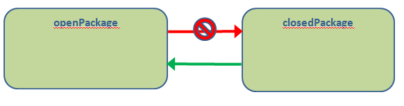
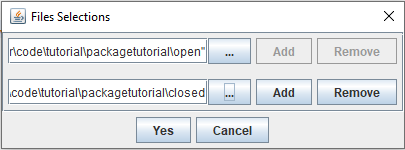
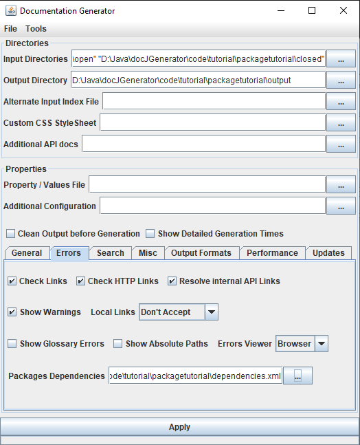
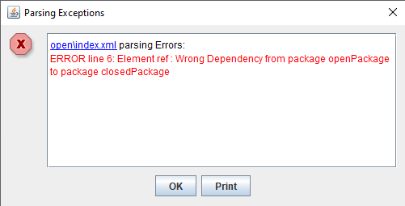
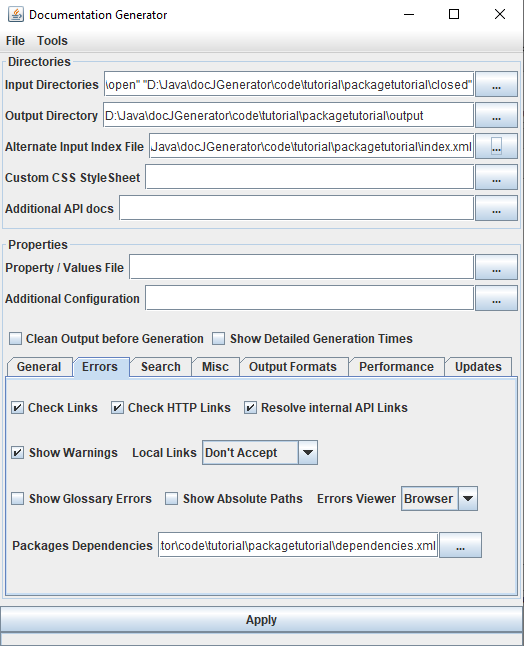
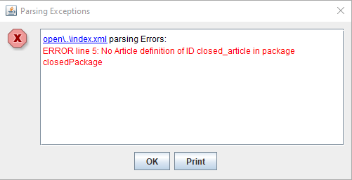

Home
Categories
Dictionary
Download
Project Details
Changes Log
What Links Here
How To
Syntax
FAQ
License
Packages tutorial
1 Create the wiki directory structure
2 Create the content of the Open Sourced package
3 Create the content of the Closed Sourced package
4 Adding an index
5 Enforce the dependencies between the two packages
6 Generate the wiki with two packages
7 Adding an index outside the packages
8 Generate the wiki with ony the open package
9 See also
2 Create the content of the Open Sourced package
3 Create the content of the Closed Sourced package
4 Adding an index
5 Enforce the dependencies between the two packages
6 Generate the wiki with two packages
7 Adding an index outside the packages
8 Generate the wiki with ony the open package
9 See also
This article is a tutorial to use packages in your wiki. We will separate Open Source and Closed Source content, and generate:
The packages dependencies file will be:
Then the Packages Dependencies file we just created in the "Errors" tab:
However, after we Click on Apply, we have the following error message:
Let's copy our index article outside of the two directories, and specify it by the "Alternate Input Index File" field in the GUI:
Now we don't have an error anymore.
The reason is that we refer to an article in the closedPackage in the index, but this package does not exist anymore. A solution is to modify the content of the index to use a condition around the reference to this article:
- One external wiki with only the Open Source content
- One internal wiki for your organisartion (for example) with both the Open Source and the Closed Source content
- Create the Open Source content in a package
- Create the Closed Source content in another package
- Generate the wiki for the Open Source content only
- Generate the wiki for both the Open Source and the Closed Source content
- Play with putting the index outside of the packages and configure the generation of the index with a condition
Create the wiki directory structure
We will create two directories:- One open directory which will contain a package with the Open Sourced articles
- One closed directory which will contain a package with the Closed Sourced articles
<package package="openPackage" />and package.xml file in the closed directory with the following content:
<package package="closedPackage" />We now have two packages, one for the Open Sourced content, and one for the Closed Sourced content.
Create the content of the Open Sourced package
We will create two articles in the open directory. First let's create the first article:<article desc="first article"> The content of the first article. Link to the <ref id="second article" />. </article>An now the second article:
<article desc="second article"> The content of the second article. </article>
Create the content of the Closed Sourced package
We will also create two articles in the closed directory. First let's create the first article:<article desc="closed article"> The closed content of the article. </article>An now the second article:
<article desc="second closed article"> The closed content of the article. A link to the <ref id="closed article"/>. </article>We want to add a link from the first article in the closedPackage package to the first article in the openPackage package. For that, we have to add the
package attribute to the reference:<article desc="closed article"> The closed content of the article. Link to the <ref id="first article" package="openPackage"/>. </article>
Adding an index
We will just create an index article in the open directory (the openPackage package):<index> A link to the <ref id="first article" />. A link to the <ref id="closed article" package="closedPackage" />. </index>
Enforce the dependencies between the two packages
We accept dependencies from closedPackage to openPackage, but not from openPackage to closedPackage:
The packages dependencies file will be:
<packagesDependencies defaultCheck="accept"> <package name="openPackage" > <dependency name="closedPackage" check="refuse" /> </package> <package name="closedPackage"> <dependency name="openPackage" check="accept"/> </package> </packagesDependencies>
Generate the wiki with two packages
To generate the wiki with the two packages, we will specify both the open and the closed directories in the "Input Directories" field:
Then the Packages Dependencies file we just created in the "Errors" tab:

However, after we Click on Apply, we have the following error message:

Adding an index outside the packages
The reason of the error is that we have an unwanted dependency between the openPackage to the closedPackage. However, we want to include the reference to the closed article in the index, but we can't do that if the index is in the openPackage. We can put the index outside of the packages:Let's copy our index article outside of the two directories, and specify it by the "Alternate Input Index File" field in the GUI:

Now we don't have an error anymore.
Generate the wiki with ony the open package
We want to be able to generate the wiki with only the openPackage package. To do that, we just have to remove the closed directory in the "Input Directories" list. However, we have the following error:
The reason is that we refer to an article in the closedPackage in the index, but this package does not exist anymore. A solution is to modify the content of the index to use a condition around the reference to this article:
<index> A link to the <ref id="first article" package="openPackage"/>. <condition condition="closedPackage"> <if> A link to the <ref id="closed article" package="closedPackage" />. </if> </condition> </index>Now there is no error anymore when generating the wiki.
See also
- Tutorials: This article presents a list of tutorials
- separating Open Source from Closed Source documentation: This article explains how the use cases of packages
×

Categories: Tutorials